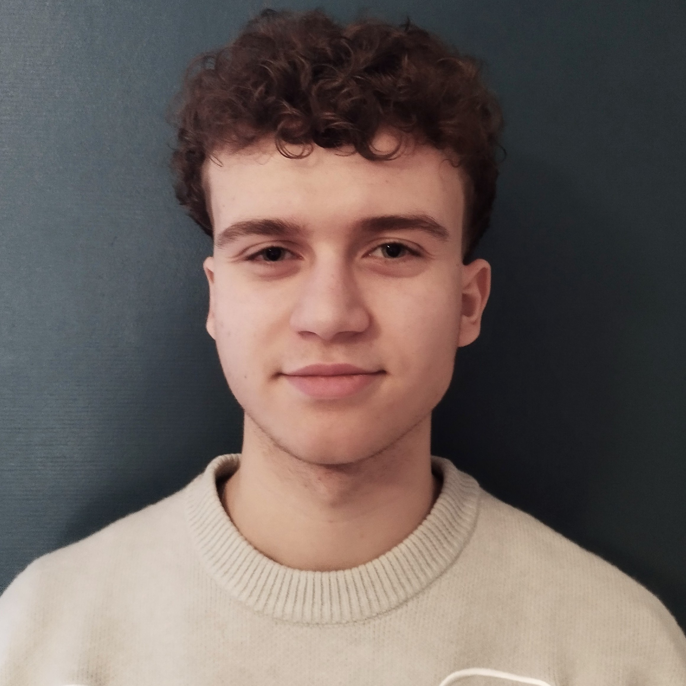

Apprenti technicien de maintenance chez Eiffage Énergie Systèmes, en alternance à l'IUT de Béthune.
Étudiant en Réseaux & Télécommunications, en alternance

Je suis en 2ᵉ année de BUT Réseaux et Télécommunications à l'IUT de Béthune, dans le parcours Réseaux Opérateurs et Multimédia (ROM). Depuis septembre 2026, je suis en alternance chez Eiffage Énergie Systèmes comme apprenti technicien de maintenance.
Issu d'un bac STI2D option SIN, j'aime comprendre comment les réseaux fonctionnent de bout en bout : de la fibre et des signaux radio jusqu'aux services (DNS, messagerie, téléphonie). La cybersécurité reste un domaine qui me passionne.
Formation, expériences et compétences
Les cinq compétences du BUT R&T parcours ROM. Pour chaque apprentissage critique : ce que j'ai fait, pourquoi, comment, mes difficultés, ce que j'en ai appris et ce que je ferais autrement.
Routage dynamique, QoS, services réseaux (DNS, messagerie, Wi-Fi centralisé), virtualisation.
Modulations et radio logicielle, réseau d'accès optique PON, liaisons multi-sites.
Python orienté objet, automatisation de sauvegardes, administration de PostgreSQL.
Commutation et redondance (HSRP), virtualisation des fonctions réseau, gestion d'incidents en alternance.
Téléphonie sur IP avec Asterisk, sécurité de la ToIP, QoS pour la voix et la vidéo.
R212 (PPP) — BUT1
J'ai commencé mon orientation avec le lycée en choisissant de partir en STI2D (Sciences et technologies de l'industrie et du développement durable), pour son coter informatique et sa possibilité de faire de plus longue études comparait au parcours professionnel. J'ai été pris d'intérêt pour le développement durable ce qui m'a rendu très impliquer dans la thématique de celui-ci, c'est pour cela que mon oral du bac avec option SIN (systèmes d'information et numérique) était sur la surconsommation et sur nos technologies actuelles pour parler de la transition énergétique. J'ai développé un grand intérêt pour les énergies renouvelables et je me sens également concerné par la situation mondiale actuelle et par les enjeux liés au développement durable. Cependant, ce qui m'a toujours passionné, c'est l'informatique, et ce qui m'intéresse tout particulièrement, c'est la cybersécurité. Je me suis donc orientée vers un BUT Réseaux et Telecom afin d'avoir des bases solides pour ensuite développé des compétences en matière de cybersécurité, même si le parcours à suivre n'est pas très clair, peu importe le chemin que j'emprunte je fini toujours par apprendre de nouvelle chose. J'ai pour ambition d'intégrer une alternance pour ma deuxième année en R&T afin d'apprendre au mieux au côté de professionnel qui j'en suis certain, m'aideront à approfondir mes connaissances.